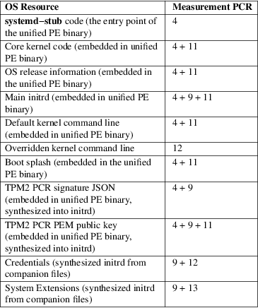

systemd-stub, sd-stub, linuxx64.efi.stub, linuxia32.efi.stub, linuxaa64.efi.stub − A simple UEFI kernel boot stub
/usr/lib/systemd/boot/efi/linuxx64.efi.stub
/usr/lib/systemd/boot/efi/linuxia32.efi.stub
/usr/lib/systemd/boot/efi/linuxaa64.efi.stub
ESP/.../foo.efi.extra.d/*.cred
ESP/.../foo.efi.extra.d/*.raw
ESP/loader/credentials/*.cred
systemd−stub (stored in per−architecture files linuxx64.efi.stub, linuxia32.efi.stub, linuxaa64.efi.stub on disk) is a simple UEFI boot stub. An UEFI boot stub is attached to a Linux kernel binary image, and is a piece of code that runs in the UEFI firmware environment before transitioning into the Linux kernel environment. The UEFI boot stub ensures a Linux kernel is executable as regular UEFI binary, and is able to do various preparations before switching the system into the Linux world.
The UEFI boot stub looks for various resources for the kernel invocation inside the UEFI PE binary itself. This allows combining various resources inside a single PE binary image (usually called "Unified Kernel Image", or "UKI" for short), which may then be signed via UEFI SecureBoot as a whole, covering all individual resources at once. Specifically it may include:
• The ELF Linux kernel images will be looked for in the ".linux" PE section of the executed image.
• OS release information, i.e. the os-release(5) file of the OS the kernel belongs to, in the ".osrel" PE section.
• The initrd will be loaded from the ".initrd" PE section.
• A compiled binary DeviceTree will be looked for in the ".dtb" PE section.
• The kernel command line to pass to the invoked kernel will be looked for in the ".cmdline" PE section.
• A boot splash (in Windows .BMP format) to show on screen before invoking the kernel will be looked for in the ".splash" PE section.
• A set of cryptographic signatures for expected TPM2 PCR values when this kernel is booted, in JSON format, in the ".pcrsig" section. This is useful for implementing TPM2 policies that bind disk encryption and similar to kernels that are signed by a specific key.
• A public key in PEM format matching this TPM2 PCR signature data in the ".pcrpkey" section.
If UEFI SecureBoot is enabled and the ".cmdline" section is present in the executed image, any attempts to override the kernel command line by passing one as invocation parameters to the EFI binary are ignored. Thus, in order to allow overriding the kernel command line, either disable UEFI SecureBoot, or don't include a kernel command line PE section in the kernel image file. If a command line is accepted via EFI invocation parameters to the EFI binary it is measured into TPM PCR 12 (if a TPM is present).
If a DeviceTree is embedded in the ".dtb" section, it replaces an existing DeviceTree in the corresponding EFI configuration table. systemd−stub will ask the firmware via the "EFI_DT_FIXUP_PROTOCOL" for hardware specific fixups to the DeviceTree.
The contents of seven of these eight PE sections are measured into TPM PCR 11, that is otherwise not used. Thus, it can be pre−calculated without too much effort. The ".pcrsig" section is not included in this PCR measurement, since it's supposed to contain signatures for the expected results for these measurements, i.e. of the outputs of the measurement operation, and thus cannot also be input to it.
When ".pcrsig" and/or ".pcrpkey" are present in a unified kernel image their contents are passed to the booted kernel in an synthetic initrd cpio archive that places them in the /.extra/tpm2−pcr−signature.json and /.extra/tpm2−pcr−public−key.pem files. Typically, a tmpfiles.d(5) line then ensures they are copied into /run/systemd/tpm2−pcr−signature.json and /run/systemd/tpm2−pcr−public−key.pem where they remain accessible even after the system transitions out of the initrd environment into the host file system. Tools such systemd-cryptsetup@.service(8), systemd-cryptenroll(1) and systemd-creds(1) will automatically use files present under these paths to unlock protected resources (encrypted storage or credentials) or bind encryption to booted kernels.
The systemd−stub UEFI boot stub automatically collects two types of auxiliary companion files optionally placed in drop−in directories on the same partition as the EFI binary, dynamically generates cpio initrd archives from them, and passes them to the kernel. Specifically:
• For a kernel binary called foo.efi, it will look for files with the .cred suffix in a directory named foo.efi.extra.d/ next to it. A cpio archive is generated from all files found that way, placing them in the /.extra/credentials/ directory of the initrd file hierarchy. The main initrd may then access them in this directory. This is supposed to be used to store auxiliary, encrypted, authenticated credentials for use with LoadCredentialEncrypted= in the UEFI System Partition. See systemd.exec(5) and systemd-creds(1) for details on encrypted credentials. The generated cpio archive is measured into TPM PCR 12 (if a TPM is present).
• Similarly, files foo.efi.extra.d/*.raw are packed up in a cpio archive and placed in the /.extra/sysext/ directory in the initrd file hierarchy. This is supposed to be used to pass additional system extension images to the initrd. See systemd-sysext(8) for details on system extension images. The generated cpio archive containing these system extension images is measured into TPM PCR 13 (if a TPM is present).
• Files /loader/credentials/*.cred are packed up in a cpio archive and placed in the /.extra/global_credentials/ directory of the initrd file hierarchy. This is supposed to be used to pass additional credentials to the initrd, regardless of the kernel being booted. The generated cpio archive is measured into TPM PCR 12 (if a TPM is present)
These mechanisms may be used to parameterize and extend trusted (i.e. signed), immutable initrd images in a reasonably safe way: all data they contain is measured into TPM PCRs. On access they should be further validated: in case of the credentials case by encrypting/authenticating them via TPM, as exposed by systemd−creds encrypt −T (see systemd-creds(1) for details); in case of the system extension images by using signed Verity images.
Note that when a unified kernel using systemd−stub is invoked the firmware will measure it as a whole to TPM PCR 4, covering all embedded resources, such as the stub code itself, the core kernel, the embedded initrd and kernel command line (see above for a full list).
Also note that the Linux kernel will measure all initrds it receives into TPM PCR 9. This means every type of initrd will be measured two or three times: the initrd embedded in the kernel image will be measured to PCR 4, PCR 9 and PCR 11; the initrd synthesized from credentials will be measured to both PCR 9 and PCR 12; the initrd synthesized from system extensions will be measured to both PCR 4 and PCR 9. Let's summarize the OS resources and the PCRs they are measured to:
Table 1. OS Resource PCR Summary

The following EFI variables are defined, set and read by systemd−stub, under the vendor UUID "4a67b082−0a4c−41cf−b6c7−440b29bb8c4f", for communication between the boot stub and the OS:
LoaderDevicePartUUID
Contains the partition UUID of the EFI System Partition the EFI image was run from. systemd-gpt-auto-generator(8) uses this information to automatically find the disk booted from, in order to discover various other partitions on the same disk automatically.
LoaderFirmwareInfo, LoaderFirmwareType
Brief firmware information. Use bootctl(1) to view this data.
LoaderImageIdentifier
The path of EFI executable, relative to the EFI System Partition's root directory. Use bootctl(1) to view this data.
StubInfo
Brief stub information. Use bootctl(1) to view this data.
StubPcrKernelImage
The PCR register index the kernel image, initrd image, boot splash, devicetree database, and the embedded command line are measured into, formatted as decimal ASCII string (e.g. "11"). This variable is set if a measurement was successfully completed, and remains unset otherwise.
StubPcrKernelParameters
The PCR register index the kernel command line and credentials are measured into, formatted as decimal ASCII string (e.g. "12"). This variable is set if a measurement was successfully completed, and remains unset otherwise.
StubPcrInitRDSysExts
The PCR register index the systemd extensions for the initrd, which are picked up from the file system the kernel image is located on. Formatted as decimal ASCII string (e.g. "13"). This variable is set if a measurement was successfully completed, and remains unset otherwise.
Note that some of the variables above may also be set by the boot loader. The stub will only set them if they aren't set already. Some of these variables are defined by the Boot Loader Interface [1] .
The following resources are passed as initrd cpio archives to the booted kernel, and thus make up the initial file system hierarchy in the initrd execution environment:
/
The main initrd from the ".initrd" PE section of the unified kernel image.
/.extra/credentials/*.cred
Credential files (suffix ".cred") that are placed next to the unified kernel image (as described above) are copied into the /.extra/credentials/ directory in the initrd execution environment.
/.extra/global_credentials/*.cred
Similar, credential files in the /loader/credentials/ directory in the file system the unified kernel image is placed in are copied into the /.extra/global_credentials/ directory in the initrd execution environment.
/.extra/sysext/*.raw
System extension image files (suffix ".raw") that are placed next to the unified kernel image (as described above) are copied into the /.extra/sysext/ directory in the initrd execution environment.
/.extra/tpm2−pcr−signature.json
The TPM2 PCR signature JSON object included in the ".pcrsig" PE section of the unified kernel image is copied into the /.extra/tpm2−pcr−signature.json file in the initrd execution environment.
/.extra/tpm2−pcr−pkey.pem
The PEM public key included in the ".pcrpkey" PE section of the unified kernel image is copied into the /.extra/tpm2−pcr−public−key.pem file in the initrd execution environment.
Note that all these files are located in the "tmpfs" file system the kernel sets up for the initrd file hierarchy and are thus lost when the system transitions from the initrd execution environment into the host file system. If these resources shall be kept around over this transition they need to be copied to a place that survives the transition first, for example via a suitable tmpfiles.d(5) line. By default, this is done for the TPM2 PCR signature and public key files.
In order to assemble a bootable Unified Kernel Image from various components as described above, use ukify(1).
systemd-boot(7), systemd.exec(5), systemd-creds(1), systemd-sysext(8), Boot Loader Specification [2] , Boot Loader Interface [1] , ukify(1), systemd-measure(1)
|
1. |
Boot Loader Interface |
https://systemd.io/BOOT_LOADER_INTERFACE
|
2. |
Boot Loader Specification |
https://uapi-group.org/specifications/specs/boot_loader_specification